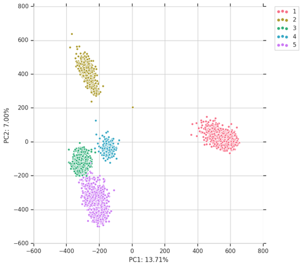
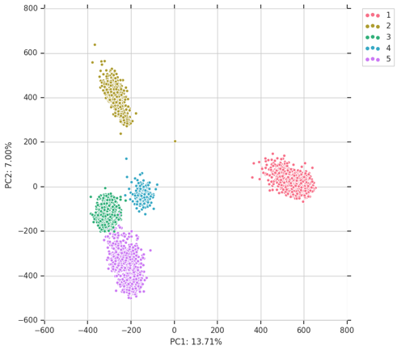

Back to Main Page
Course Projects:
Smart Pet Feeder
- Sep 2019 - Dec 2019
- Language and Tools: C, ESP32, Python, AWS IoT/EC2, Scikit-learn
- Designed and prototyped an automated pet food dispenser based on low power programmable wireless devices.
- Deployed AWS IoT to receive data, send instructions and allow easy scheduling and dispensing of pet food from cloud.
- Implemented facial recognition with SVM algorithm for pets identification. On RPi 3, the system is able to train model with limited sized samples within minutes and distinguish pets identity within 1s with on-board CPU with trained model.
- Designed machine learning algorithms combined with IoT sensor to monitor pet feeding habits and detect abnormal situation.
- Project Github Page
Multi-Room Chat Server(Web Application)
- June 2020 - August 2020
- Language and Tools: JavaScript, PHP, HTML, CSS, NoSQL, MySQL, Node.js, Angular.js, AJAX
- Designed a real-time multi-room chat server using Node.JS and Socket.IO.
- Implemented both client-server and chat-server to realize the functions in JavaScript.
- Deployed and operated the online application on an AWS EC2 Instance to improve the performance and make good management of the application.
2D Graphics Canvas
- September 2017 – December 2017
- Language and Tools: C++, libpng, libsdl2, gdb
- Implements fundamentals of modern software 2D graphics: geometric primitives, scan conversion, clipping, transformations, compositing, texture sampling.
- Advanced functions include gradients, antialiasing, filtering, parametric curves, and geometric stroking.
Mail Client and Server
- Jan 2017 – Apr 2017
- Language: Python
- Constructed a mail client and server based on SMTP
- Used socket programming in building the communication link between client and server
Research Projects:
Distributed Agent Workflow Scheduling with Distributed Constraint Optimization
- May 2019 – Nov 2020
- Language and Tools: Java, Maven, Kafka, Jenkins, SLF4J
- Mapped workflow scheduling problems to be solved by distributed constraint optimization(DCOP).
- Built messaging system for distributed agents to communicate with each other based on Kafka.
- Deployed maximum gain messaging(MGM) algorithm to automatically generate optimal workflow schedule for multiple agents.
- Created APIs based on the need of other modules in the project to access optimization functions and results.
- Collaborated with Rayetheon BBN Technologies with DAPRA fund, details available upon approval.
Communication-Aware Distributed Constraint Optimization
- Mar 2019 to Aug 2020
- Advisor: Dr. William Yeoh
- Implementing and extending DPOP algorithm.
- Communication-Aware Message Optimization for DPOP under review
MinHash on Mercator
- Oct 2018 - Nov 2018
- Advisor: Dr. Jeremy Buhler
- Implementing a parallel algorithm to get minhash sketches with DNA sequence as input on Mercator, A framework to implement irregular streaming applications on NVIDIA GPUs
Online Resource Allocation Using Primal-dual Techniques
- Nov 2018 - Dec 2018
- Advisor: Dr. Chien-Ju Ho
- Study online resource allocations problems, such as assigning tasks to workers who arrive online, assigning kidneys to patients, and assigning passengers to Uber drivers.
- The goal is to maximize the total system utility (e.g., social welfare) subject to various constraints (e.g., budget constraints, fairness constraints, or assignment constraints.)
Clustering Long Read Amplicon Sequencing Data
- Oct 2017 - Oct 2018
- Advisor: Dr.
Jeremy Wang
- We present a method to identify and partition clusters of unique amplicons from a complex population
of full-length amplicon sequences.
- Paper "Resolution of Complex Amplicon Populations Using Long Read Sequencing" submitted to RECOMB
2019.

Kmer Based Phylogenetic Modeling
- Jan 2017 – Oct 2017
- Advisor: Dr.
Corbin Jones, Dr.
Jeremy Wang
- Build the accurate phylogenetic model from DNA sequencing data based on kmer without assembly and
alignment
- Successfully generate phylogenetic tree from simulated reference primate and raw DNA sequencing data
of Drosophila
- PhylgTree Github Page

For-fun Projects
Pysbatch
- Aug 2017 to Dec 2017
- Implemented a python library wrapping UNIX/Linux system calls and SLURM command. The library
enable users to set up complicated pipeline workflow using only python functions and avoid Shell
script.
- Provide simplified options for user to set job dependency relations and limit concurrent jobs by
pre-set user quota.
- Packaged and released on PyPI and conda-forge platforms, downloaded over 2000 times.
- Pysbatch Github Page
- use
pip install pysbatch to install
- or use
conda install -c conda-forge pysbatch to install

pip install pysbatch to installconda install -c conda-forge pysbatch to install